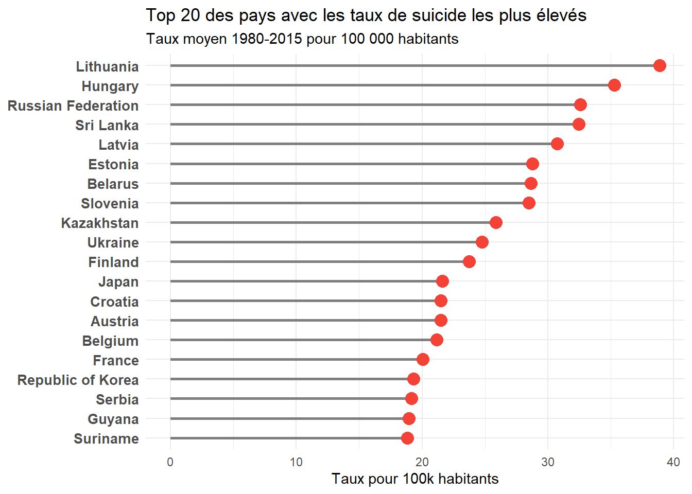
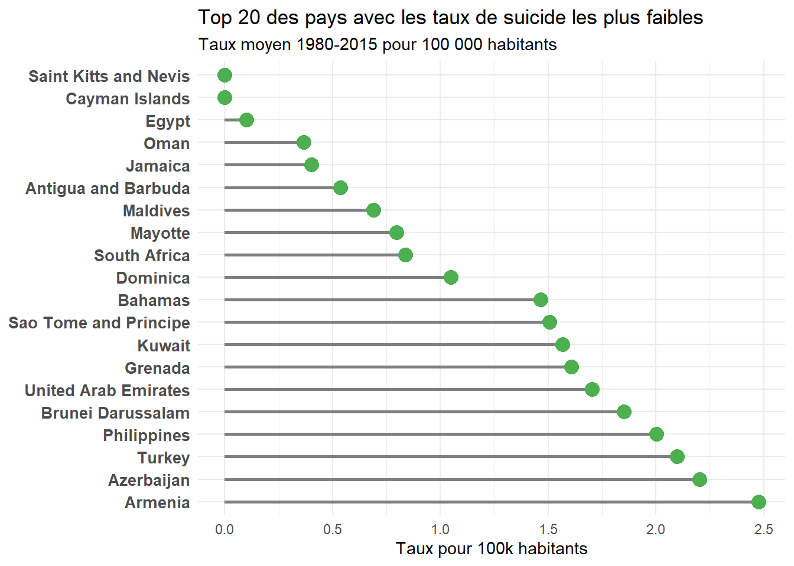
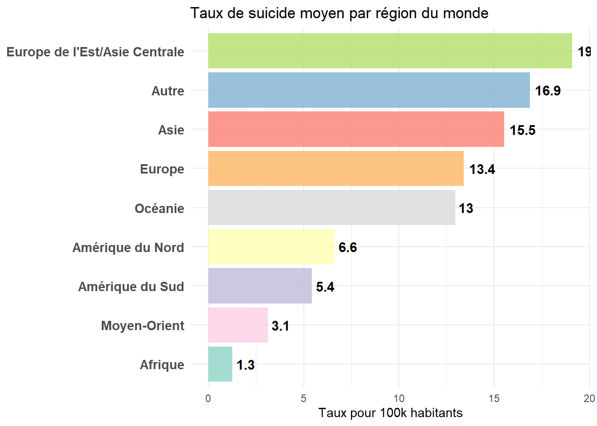
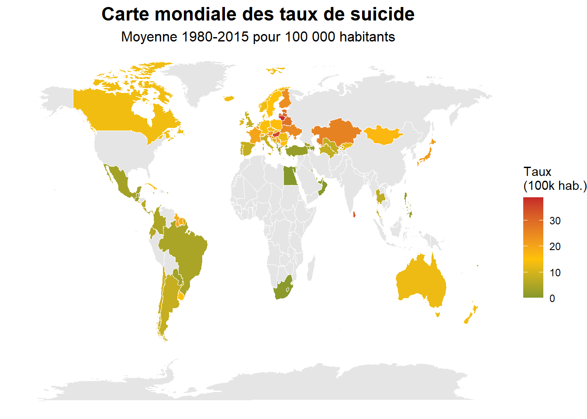
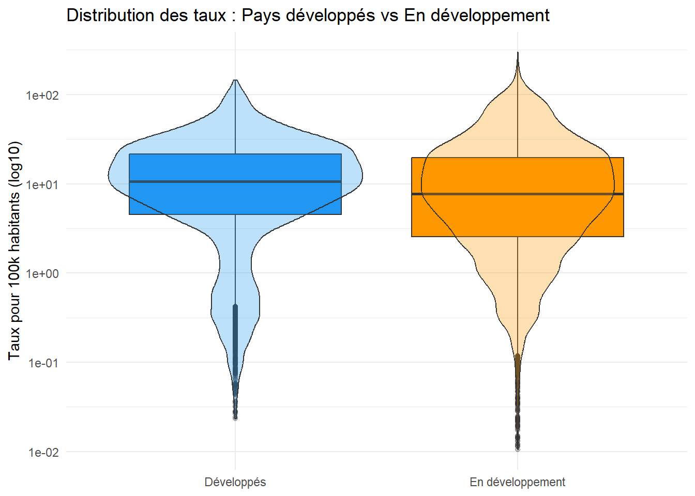

Nombre total de pays analysés : 118 **Observations par pays** : - Minimum : 12 - Médiane : 366 - Moyenne : 305.6 - Maximum : 456 Nombre total de pays analysés : 118 **Observations par pays** : - Minimum : 12 - Médiane : 366 - Moyenne : 305.6 - Maximum : 456 Couverture temporelle : - Pays avec couverture complète (36 ans) : 8 - Pays avec > 80% de couverture : 64 - Pays avec < 50% de couverture : 29 | Pays | Total suicides | Population totale | Taux moyen (100k) |
|---|---|---|---|
| Lithuania | 42 166 | 108 421 714 | 38.89 |
| Hungary | 130 018 | 368 771 868 | 35.26 |
| Russian Federation | 1 500 992 | 4 607 764 120 | 32.58 |
| Sri Lanka | 80 747 | 248 810 626 | 32.45 |
| Latvia | 24 861 | 80 935 340 | 30.72 |
| Estonia | 12 671 | 44 051 596 | 28.76 |
| Belarus | 74 974 | 261 558 592 | 28.66 |
| Slovenia | 16 805 | 58 977 219 | 28.49 |
| Kazakhstan | 123 151 | 475 772 169 | 25.88 |
| Ukraine | 365 170 | 1 474 109 284 | 24.77 |
| Finland | 33 677 | 141 925 658 | 23.73 |
| Japan | 937 614 | 4 340 184 444 | 21.60 |
| Croatia | 29 400 | 136 763 191 | 21.50 |
| Austria | 60 179 | 280 244 814 | 21.47 |
| Belgium | 75 948 | 358 792 221 | 21.17 |
| France | 395 500 | 1 973 574 675 | 20.04 |
| Republic of Korea | 261 730 | 1 354 944 936 | 19.32 |
| Serbia | 24 179 | 126 140 138 | 19.17 |
| Guyana | 3 438 | 18 136 689 | 18.96 |
| Suriname | 2 492 | 13 222 179 | 18.85 |

| Pays | Total suicides | Population totale | Taux moyen (100k) |
|---|---|---|---|
| Cayman Islands | 0 | 29 400 | 0.00 |
| Saint Kitts and Nevis | 0 | 117 300 | 0.00 |
| Egypt | 1 206 | 1 189 403 348 | 0.10 |
| Oman | 33 | 8 987 087 | 0.37 |
| Jamaica | 198 | 49 182 628 | 0.40 |
| Antigua and Barbuda | 11 | 2 054 919 | 0.54 |
| Maldives | 20 | 2 900 246 | 0.69 |
| Mayotte | 6 | 754 088 | 0.80 |
| South Africa | 7 321 | 873 130 762 | 0.84 |
| Dominica | 4 | 381 700 | 1.05 |
| Bahamas | 107 | 7 308 348 | 1.46 |
| Sao Tome and Principe | 4 | 265 500 | 1.51 |
| Kuwait | 1 013 | 64 721 091 | 1.57 |
| Grenada | 38 | 2 365 726 | 1.61 |
| United Arab Emirates | 622 | 36 502 275 | 1.70 |
| Brunei Darussalam | 123 | 6 640 328 | 1.85 |
| Philippines | 21 330 | 1 065 068 179 | 2.00 |
| Turkey | 10 131 | 482 640 582 | 2.10 |
| Azerbaijan | 3 366 | 152 949 000 | 2.20 |
| Armenia | 2 422 | 97 844 359 | 2.48 |

| region | nb_pays | total_suicides | population | taux_moyen |
|---|---|---|---|---|
| Europe de l’Est/Asie Centrale | 8 | 634 553 | 3 323 470 723 | 19.09 |
| Autre | 56 | 3 197 667 | 18 955 490 964 | 16.87 |
| Asie | 5 | 1 181 100 | 7 609 210 101 | 15.52 |
| Europe | 25 | 2 057 046 | 15 342 057 943 | 13.41 |
| Océanie | 2 | 96 726 | 746 191 816 | 12.96 |
| Amérique du Nord | 6 | 309 154 | 4 663 735 504 | 6.63 |
| Amérique du Sud | 7 | 485 272 | 8 933 387 484 | 5.43 |
| Moyen-Orient | 6 | 25 468 | 816 816 647 | 3.12 |
| Afrique | 3 | 11 481 | 911 484 684 | 1.26 |


| developpement | nb_pays | taux_moyen | taux_median | ecart_type |
|---|---|---|---|---|
| Développés | 19 | 15.40 | 10.34 | 17.05 |
| En développement | 99 | 12.59 | 4.72 | 20.56 |

Points clés identifiés :
🌍 Couverture géographique : 118 pays analysés sur tous les continents
🔴 Pays le plus touché : Lithuania avec un taux moyen de 38.89 pour 100k habitants
🟢 Pays le moins touché : Cayman Islands avec un taux moyen de 0 pour 100k habitants
🗺️ Région la plus touchée : Europe de l’Est/Asie Centrale présente les taux moyens les plus élevés
📈 Tendances divergentes :
🌐 Facteurs géographiques : Les taux varient considérablement selon :
Interprétation : L’analyse géographique révèle d’importantes disparités mondiales. Les pays d’Europe de l’Est et certaines régions d’Asie présentent historiquement les taux les plus élevés. Les différences observées reflètent des réalités socio-économiques, culturelles et sanitaires complexes qui nécessitent des approches de prévention adaptées à chaque contexte national.